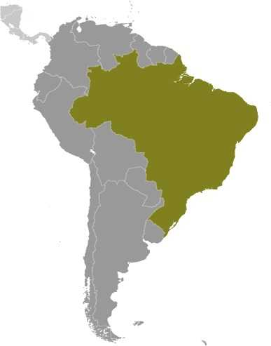

Brazil
Created September 28th 2023
Introduction
By far the largest and most populous country in South America, Brazil continues to pursue industrial and agricultural growth and development of its interior. Having successfully weathered a period of global financial difficulty in the late 20th century, under President Luiz Inácio LULA da Silva (2003-2010) Brazil was seen as one of the world's strongest emerging markets and a contributor to global growth.
People and Society
Population
218,689,757, 2023 esimate
Comparison ranking 7
Language
Portuguese (official and most widely spoken language); note - less common languages include Spanish (border areas and schools), German, Italian, Japanese, English, and a large number of minor Amerindian languages
Religions
Roman Catholic 64.6%, other Catholic 0.4%, Protestant 22.2% (includes Adventist 6.5%, Assembly of God 2.0%, Christian Congregation of Brazil 1.2%, Universal Kingdom of God 1.0%, other Protestant 11.5%), other Christian 0.7%, Spiritist 2.2%, other 1.4%, none 8%, unspecified 0.4% (2010 est.)
Environment
Current Issues
deforestation in Amazon Basin destroys the habitat and endangers a multitude of plant and animal species indigenous to the area; illegal wildlife trade; illegal poaching; air and water pollution in Rio de Janeiro, Sao Paulo, and several other large cities; land degradation and water pollution caused by improper mining activities; wetland degradation; severe oil spills
Air Pollutants
- particulate matter emissions: 11.49 micrograms per cubic meter (2016 est.)
- carbon dioxide emissions: 462.3 megatons (2016 est.)
- methane emissions: 401.83 megatons (2020 est.)
Waste and Recycling
- municipal solid waste generated annually: 79,889,010 tons (2015 est.)
- municipal solid waste recycled annually: 1,118,446 tons (2014 est.)
- percent of municipal solid waste recycled: 1.4% (2014 est.)
Military and Security
Military and Security Forces
Brazilian Armed Forces (Forças Armadas Brasileiras): Brazilian Army (Exercito Brasileiro, EB), Brazilian Navy (Marinha do Brasil, MB, includes Naval Aviation (Aviacao Naval Brasileira) and Marine Corps (Corpo de Fuzileiros Navais)), Brazilian Air Force (Forca Aerea Brasileira, FAB) (2023)
Military Expenditures
- 1.2% of GDP (2022 est.)
- 1.3% of GDP (2021 est.)
- 1.4% of GDP (2020 est.)
- 1.4% of GDP (2019 est.)
- 1.5% of GDP (2018 est.)
Military Service Age and Obligation
18-45 years of age for compulsory military service for men (women exempted); only 5-10% of those inducted are required to serve; conscript service obligation is 10-12 months; 17-45 years of age for voluntary service (2023)